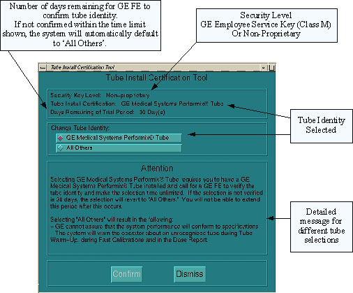
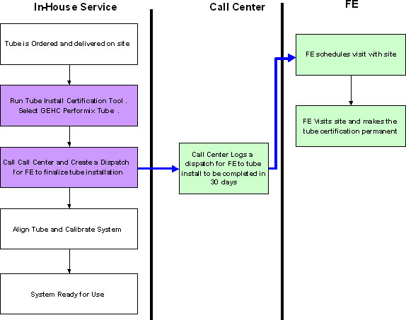
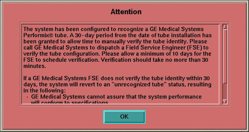

Operating Documentation
Direction 5193575-800, Rev# 5
LightSpeed 7.X Service Information - Adv
Operating Documentation |
| Last Revised on: | 28 August 2008 |
| NOTE: | If the tube in your system has a Tube ID Board, the software automatically selects the tube identity and sets it to “GE Performix Tube”; there is no action needed by service personnel. For all other systems or if the software does not automatically select the tube identity, follow the procedure below. |
| Required Persons | Preliminary Requirements | Procedure | Finalization |
| 1 | None | 30 Minutes | None |
The SmarTube software includes a number of enhancements. One of the enhancements that affects the tube change procedure is an enhancement known as Secure Tube Identification. We have included this feature to confirm that a tube with “system-known” operating characteristics is installed so GE can assure that all system elements will perform as designed. This feature allows positive identification of the GE CT tube in use so that the interaction between the tube and the system operating characteristics may be optimized for best performance.
In contrast, if a non-GE supplied tube is used there can be operating impact on the system. For instance—mechanical stability, life expectancy of other components, calibration differences, the accuracy of dose reporting and image quality may be affected. GE does not test non-GE supplied tubes for suitability, and therefore GE cannot assure system performance for systems utilizing a non-GE supplied tube. If a non-GE supplied tube is installed the SmarTube software displays a message for the CT Operator on the console indicating that fact. No features will be disabled if a non-GE supplied tube is detected; however, advisories will be posted to alert the user of the possibility for performance discrepancies. The advisories are purely informational. The CT equipment users benefit by having a mechanism to quickly and effectively confirm the configuration of their systems without having to perform a physical inspection. This is a phased release for the following three software platforms:
FMI 25363 - GOC1 Irix/Pegasus systems (HiSpeed QX/i, LightSpeed 2.X, 3.X and 4.X)
FMI 25364 - GOC2 Linux/Pegasus systems (HiSpeed QX/i, LightSpeed 2.X, 3.X and 4.X)
FMI 25365 - GRE console systems, Pathfinder 1.5 (all systems from LightSpeed 1.X)
Among the new features enabled by SmarTube are the following:
Tube Identification – allows positive identification of the GE CT tube in use so that the system may be optimized for the particular tube’s operating characteristics (discussed above)
Enhanced Tube Management – results in an average 7% to 20%+ improvement in GE tube life depending upon system platform type (not available on H1 based LightSpeed QX/I system).
Note that Enhanced Tube Management is provided with GE-supplied tubes subject to an included license. A license for systems not using GE-supplied tubes is available for a fee. However, Enhanced Tube Management has been exclusively developed and designed for use with GE-supplied tubes. GE has conducted no testing for any other tube configuration, makes no representation concerning, and assumes no responsibility for compatibility with non-GE-supplied tubes.
Enhanced Dose Reporting – facilitates saving of patient dose data in a format that will allow easy communication and storage
Enhanced Data Capture – allows development of improved proactive remote diagnostic capability and additional features planned for future implementation.
Enhanced Advisory Messaging—communicates exception information in situations where system performance may be affected by the use of a non-GE supplied tube
There are two basic tube types related to this topic.
GE Supplied Tubes
Non-GE Supplied Tubes
When installing a new tube it will be necessary to utilize the new Tube Install Calibration (TIC) tool. The tool is in Common Service Desktop under Configuration. Follow the process shown in the Process Flow section of this document. You will need to select Tube Identity (“GE Medical Systems Performix Tube” or “All Others”) using the Tube Install Certification Tool. It will be necessary to insert the GE Employee Service Key (Class M) in order to permanently authenticate the tube as a GE supplied tube.
If “All Others” is chosen, advisory messages will be posted on systems with Non-GE-Supplied tubes during Fast Cal indicating that Fast Calibration techniques are designed specifically for GEHC Performix tubes and that the performance of the system cannot be guaranteed with unrecognized tubes. In addition, a message will be posted on the Dose Report screen save image indicating that GE cannot assure the accuracy of reported dose information for any configurations that include tubes other than GE Medical Systems Performix Tubes.
If the installed x-ray tube is a GE-Supplied tube and the field service engineer did not have all the appropriate information to complete verification, a message will be displayed indicating verification needs to be completed. If the GE-Supplied tube is installed by either an in-house or 3rd party service provider, the same message will be displayed and the customer will need to call to have a GE Service Representative dispatched to verify the identity of the tube. A message will be displayed for 30 days or until the field service engineer is able to complete tube installation verification within the 30-day window. If verification is not complete within 30 days then the system will revert to “All Others” status and operate accordingly.
If the tube is a GE-Supplied tube and if the tube has been properly authenticated with a GE Employee Service Key (Class M) then the warning messages are not necessary and will not be posted.
| Item | Qty | Effectivity | Part# | Manufacturer |
| Class M Service Key (See Note) | 1 | Linux Based Operating Systems |
| NOTE: | This tool is only available to GE Healthcare service personnel. |
Potential Tube damage or explosion if a non-GE Tube is classified as a GE Tube.
Applies to any system that does not support Smart Tube ID.
Class M Service key required to effectively record Tube type when the following events occur. (This tool is only available to GE Healthcare service personnel.)
Tube is changed
After Load From Cold (LFC) software install
When performing Beam on Window
When performing Hot or Cold ISO alignment
For all tube changes, the following needs to be performed.
Select the [Tube Install Certification Tool] in the Common Service Desktop under [Configuration] .
| NOTE: | Do not double click the [Tube Install Certification Tool] . This will cause more than one tool screen to be displayed, one with message service key information not available. If this happens, delete screens and try again. If this happens more than once, reboot the system and try again. |
(For GE Healthcare service personnel only) Insert the Class M Service Key.
Verification of GE Medical System Performix tube: This can be verified by checking the tube insert model number that can be found on tube rating plate.
In the Tube Install Certification Tool, Change Tube Identity field, select [GE Medical Systems Performix Tube] or [All Others] as appropriate. See Illustration 1.
Select [Confirm] . A confirmation screen is displayed.
On the confirmation screen, select [Accept] .
Exit the Tube Install Certification Tool by selecting [Dismiss] .
(For non-GE service personnel) Additionally for a GE Medical Systems Performix Tube, follow the process shown in Illustration 2.
Illustration 1: Tube Install Certification Tool Screen

Illustration 2: Tube Authentication Process

The Tube Installation Certification (TIC) functional flow is displayed in Illustration 3. The installation path determines if the customer will see any popup windows or Dose Reporting qualifiers similar to Illustration 4, Illustration 5, and Illustration 6.
Illustration 3: Tube Identity Selection and Messages Flowchart

| NOTE: | Possible popup messages at startup:
|
Illustration 4: 30 Day Configuration Install Message

Illustration 5: Unrecognized X-Ray Tube Installed Message

Illustration 6: Unrecognized X-Ray Tube “Dose” Message (Example Shown)

No finalization required.